Elegant and expensive aren't the same thing.
A powder room can outshine a room three times its budget, and the reason usually isn't the price tag.
It's restraint.
Clean visual flow, one or two standout elements, and the confidence to not try to do everything at once.

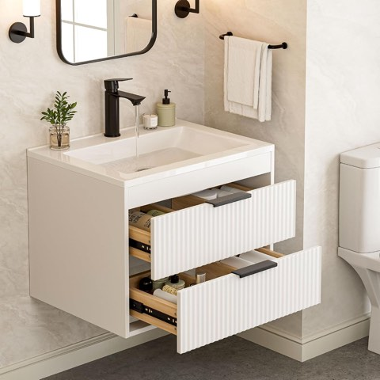
24 Inch Modern Wall Mounted Floating Bathroom Vanity with Sink and Double Drawers
Shop on AmazonWhat an Elegant Look Actually Costs
Less than most people assume, if the money goes to the right places.
One quality mirror or light fixture. Stylish hardware. A couple of elevated finishes.
Skip the overdecorating, the trendy accessories, the cheap filler items.
Fewer, better pieces consistently outperform a cart full of small purchases.
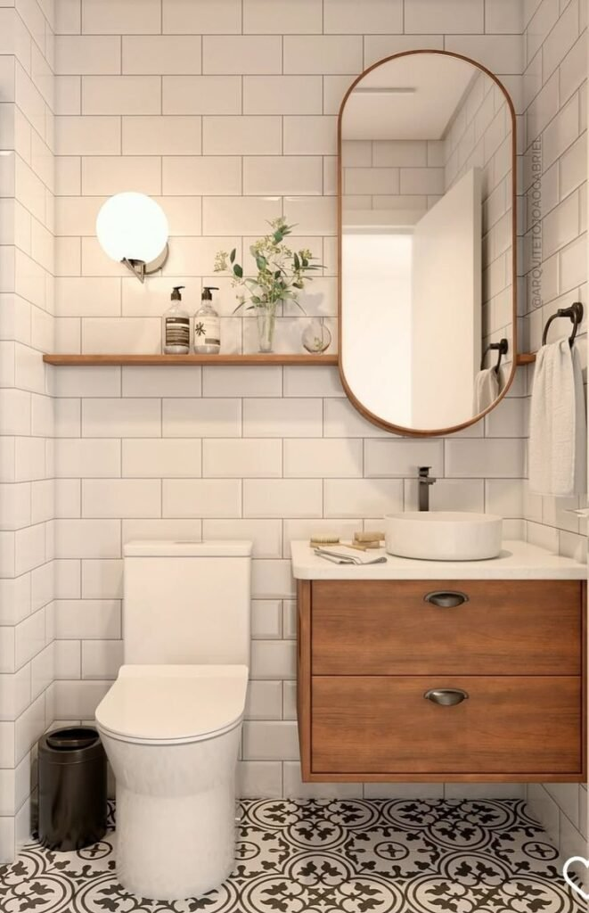
Pick a Direction Before Buying Anything
Wandering into a powder room refresh without a plan leads to half-finished rooms and regretted purchases.
Start with one question: what should a guest feel walking in?
Classic and timeless. Modern and moody. Soft and feminine. Bold and artistic. Minimal and architectural.
Pick one hero element, a wallpaper, a mirror, a vanity, a light fixture, a sink, and let everything else play a supporting role.
A tight palette helps too: one main color, one supporting neutral, one accent finish. Nothing more.
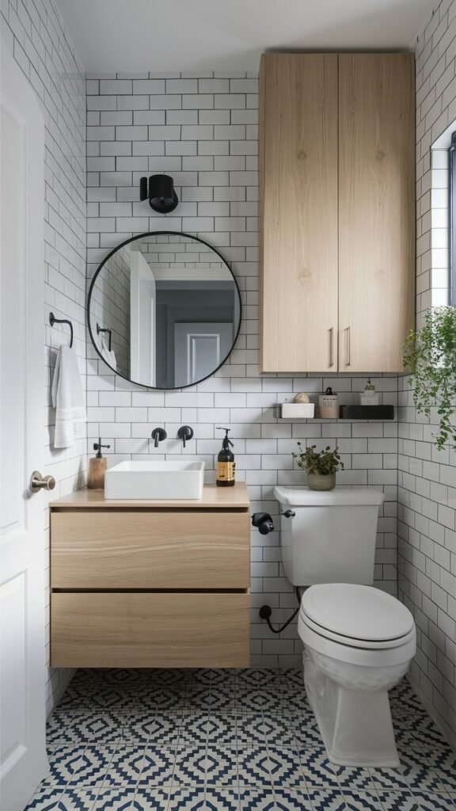

The Mistakes That Undo It Fastest
Overdecorating tops the list. Too many framed prints, a crowded shelf, decorative items competing for attention.
One statement piece beats five smaller fillers, every time.
Ignoring lighting is a close second. Beautiful wallpaper looks flat and tired under harsh white bulbs.
And treating the powder room as an afterthought is the quiet killer, it doesn't have anywhere to hide a rushed decision the way a bigger room does.
What Actually Reads as Elegant Here
A powder room that tries to show off every trend ends up looking confused instead of polished.
The ones that feel elegant pick a lane and stay in it.
One bold wallpaper instead of five small accessories.
A sculptural mirror instead of a wall of busy art.
Soft, warm lighting instead of a harsh overhead glare.

3 Light Brushed Brass Vanity Light Fixture, Gold
Shop on AmazonWOLIBEER Antique Brass Towel Ring, Round Hand Towel Holder
Shop on Amazon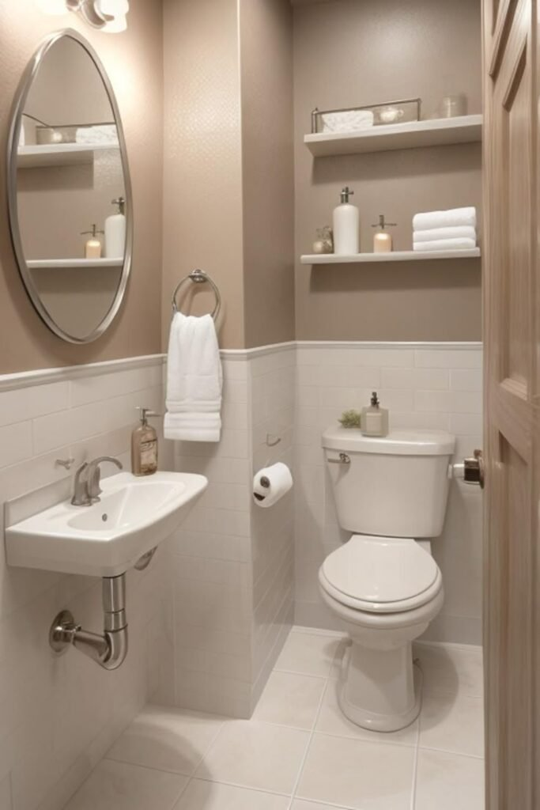
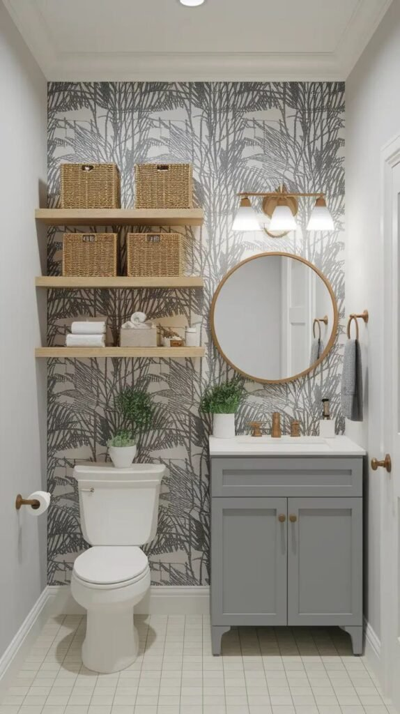
1. Finishes That Repeat on Purpose
Mismatched finishes break elegance faster than almost anything else on this list.
One metal finish, one wood tone, one stone type, repeated throughout the room rather than varied.
Faucet, lighting and hardware are where this consistency matters most.
When the finishes align, the whole room reads as professionally designed, even on a modest budget.
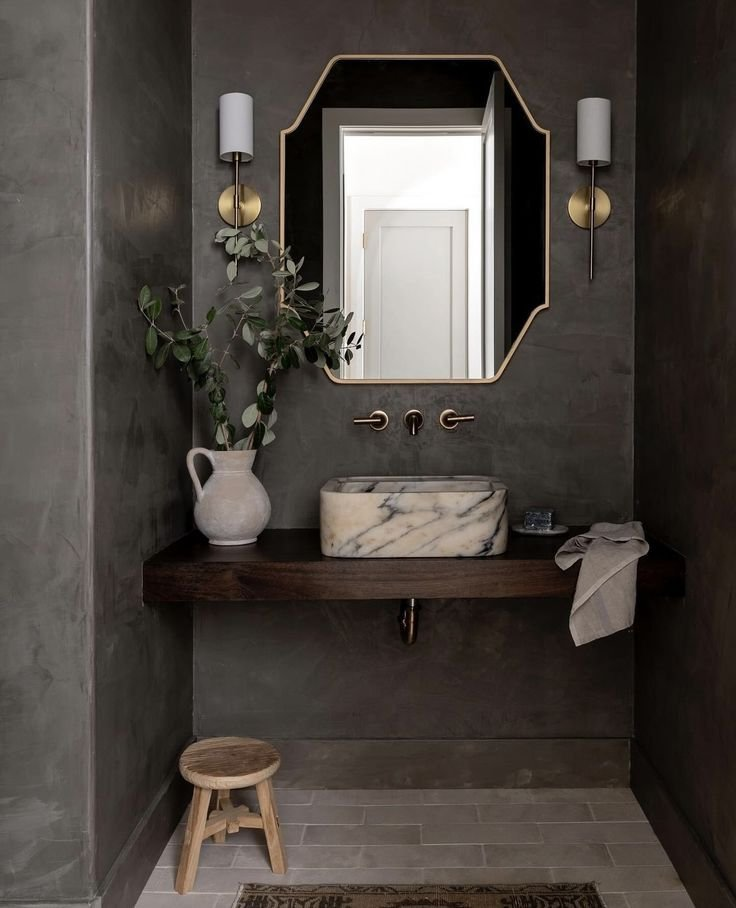
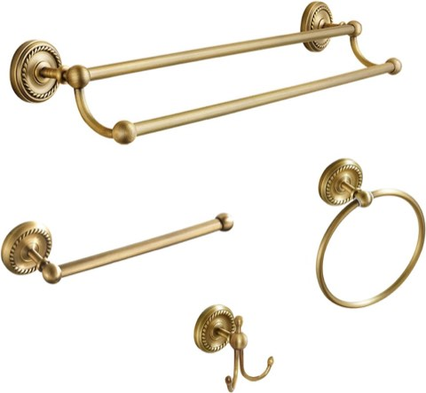
4 Piece Antique Brass Gold Bathroom Accessories Set, 24 Inch Towel Holder
Shop on Amazon2. A Signature Scent
This one sounds unnecessary until it's actually in the room.
Scent creates memory in a way visuals alone don't, people associate it directly with quality.
Clean, soft and slightly luxurious beats anything overpowering.
Linen, soft florals and light wood notes all read as subtle rather than aggressive.
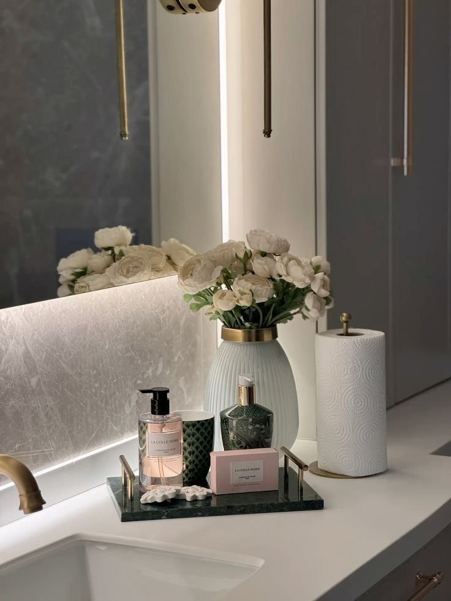

3. Textiles That Soften Every Hard Surface
Towels aren't purely functional, they're part of the room's design, whether or not that's intentional.
Neutral hand towels, subtle texture, and genuinely high-quality fabric go a long way.
Loud patterns only work when the rest of the room stays neutral around them.
Swapping towels seasonally is a small, low-cost way to keep the whole room feeling refreshed.

4. A Built-In Niche for Quiet Storage
Even a small built-in instantly raises the perceived design level of a room.
It reduces visible clutter and adds a bit of subtle architecture at the same time.
One decor piece, one plant, neutral tones, the same restraint that works on open shelves applies here too.
Overstyling a built-in defeats the purpose of having one.
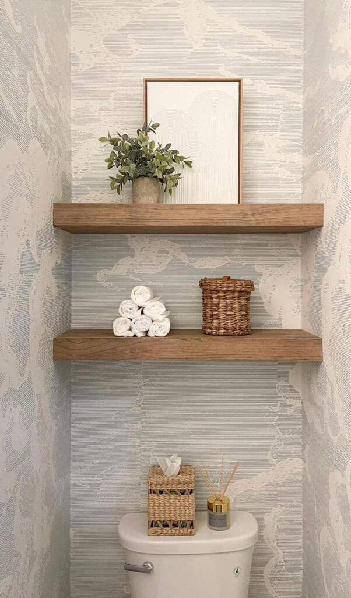
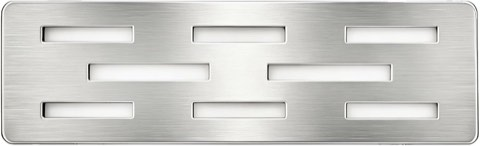
Brushed Stainless Steel Shower Niche Shelf Insert for 12 Inch Tile Niches
Shop on Amazon5. A Sink That Reads as Sculptural
A sink doesn't have to hide under a counter, it can be the room's focal point instead.
A stone vessel sink in particular can turn an entire vanity into the star of the room.
Soft oval shapes and matte finishes tend to age better than anything overly trendy in color.
Timeless shapes consistently outlast whatever's currently popular.
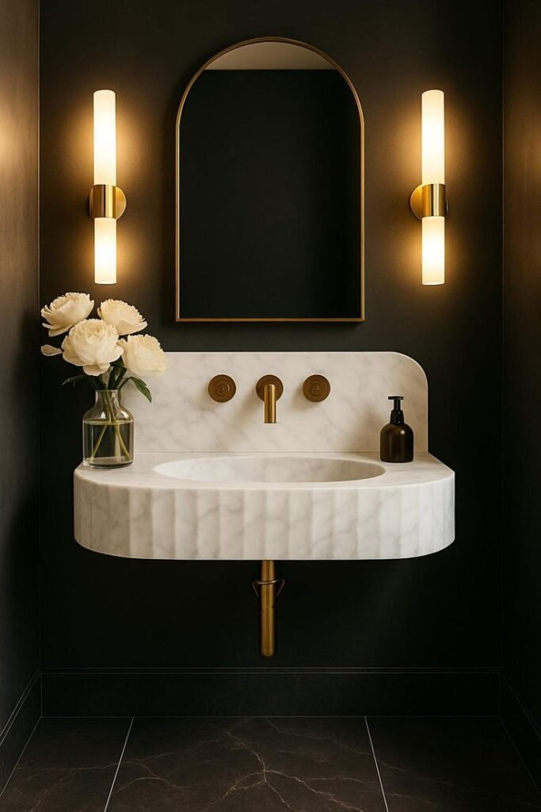
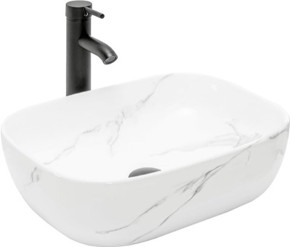
Ceramic Bathroom Vessel Sink with Faucet and Pop-Up Drain, 18 x 13 Inch
Shop on Amazon6. A Ceiling That Gets Noticed Too
Most people forget the ceiling exists at all.
That's exactly why using it works so well, a powder room is small enough that people actually look up and notice.
Wallpaper on the ceiling, a high-gloss paint finish, or a subtle metallic treatment all add unexpected drama.
Keep the walls simpler when the ceiling gets the spotlight, balance is what keeps it from feeling like too much.
7. Contrast That Creates Visual Interest
A room with zero contrast tends to feel flat, no matter how nice the individual pieces are.
Light walls with dark fixtures. Dark walls with a white sink. Warm metals against cool stone.
Any of these pairings instantly makes a room feel more deliberate.
Contrast is one of the cheapest ways to make a design decision look intentional.
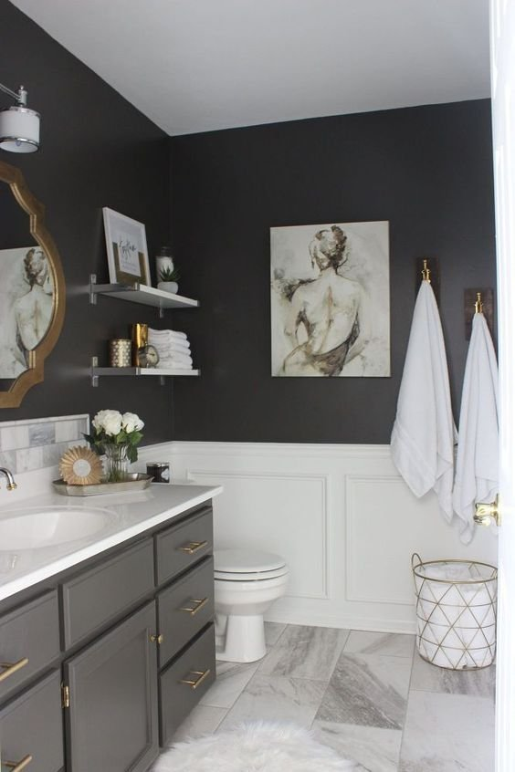
8. Natural Materials for Quiet Luxury
Natural texture adds warmth without demanding attention.
A stone sink, wood accents, or a linen-textured wallpaper all age well rather than looking dated in a few years.
These materials tend to read as expensive even when the actual cost wasn't dramatic.
That quiet, understated quality is exactly the point.
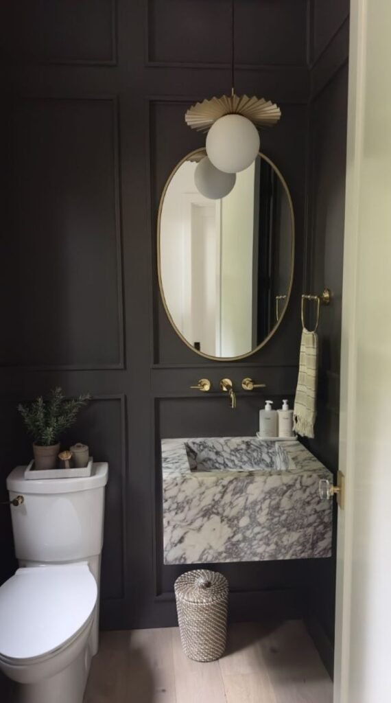
9. Art That Feels Curated
Art belongs in a powder room. Random art doesn't.
One well-chosen piece beats three filler frames every time.
Abstract prints, line drawings and black-and-white photography all age well. Trendy typography quotes don't.
Above the toilet, centered on a feature wall, or leaning on a small shelf all work as placement.
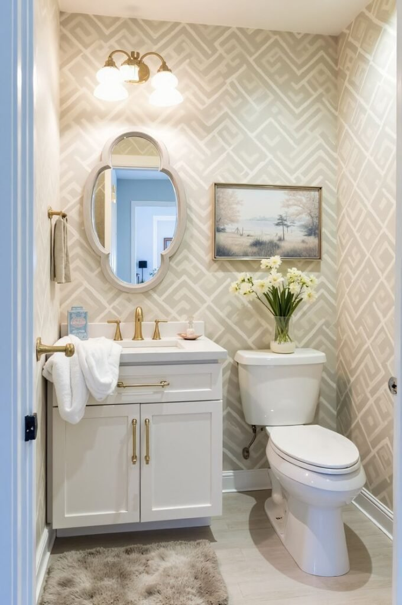

10. Hardware Upgraded Beyond the Basics
Hardware feels like a minor detail until it's upgraded, and then there's no going back to the builder-grade version.
Brushed brass, matte black and soft champagne gold all hold up well on their own.
Avoid mixing too many finishes in one room, consistency does more for elegance than variety does.
Faucet, towel ring and cabinet pulls are where this upgrade shows up the most.
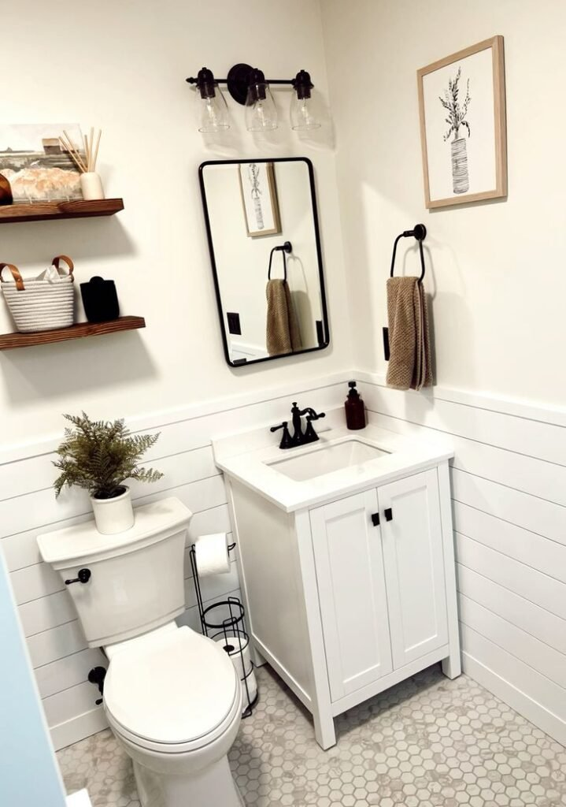
11. Minimal Decor, Maximum Impact
Overstyling a small shelf is one of the quickest ways to undercut an otherwise elegant room.
One sculptural object. One small plant or floral stem. One elevated soap dispenser. Then stop.
Minimal styling reads as intentional and highlights the quality of what's actually there.
When every item competes for attention, elegance is usually the first thing to leave the room.
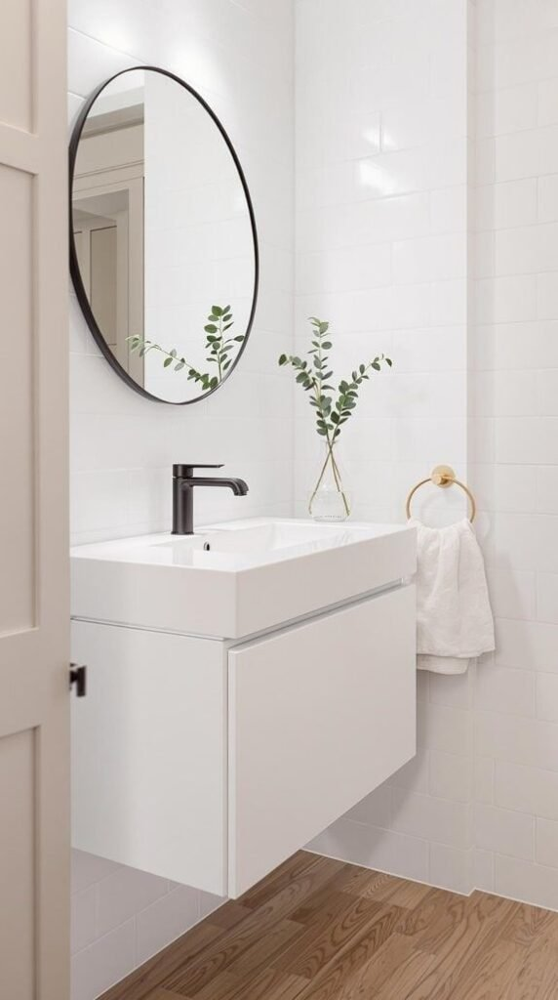
12. Lighting That Flatters Instead of Exposes
Lighting can make or break every other decision in the room.
Warm light only, sconces where possible, and no harsh overhead-only setup.
Globe sconces, sculptural wall lights and vintage-inspired brass fixtures all do double duty as decor.
Good lighting flatters finishes. Bad lighting exposes every flaw in the room at once.
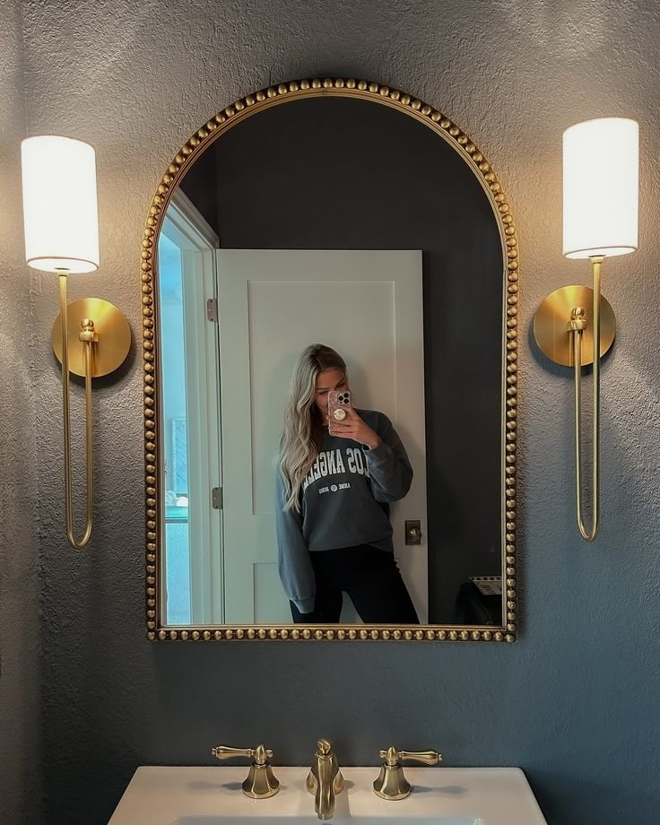
13. A Floating Vanity for Visual Lightness
A bulky cabinet is one of the fastest ways to kill visual flow in a small room.
A floating vanity opens the floor back up and gives the whole space a custom-built feel.
Wood tones or matte finishes, minimal hardware, and letting the wall and mirror do the talking above it.
Less bulk below almost always reads as more elegant above.
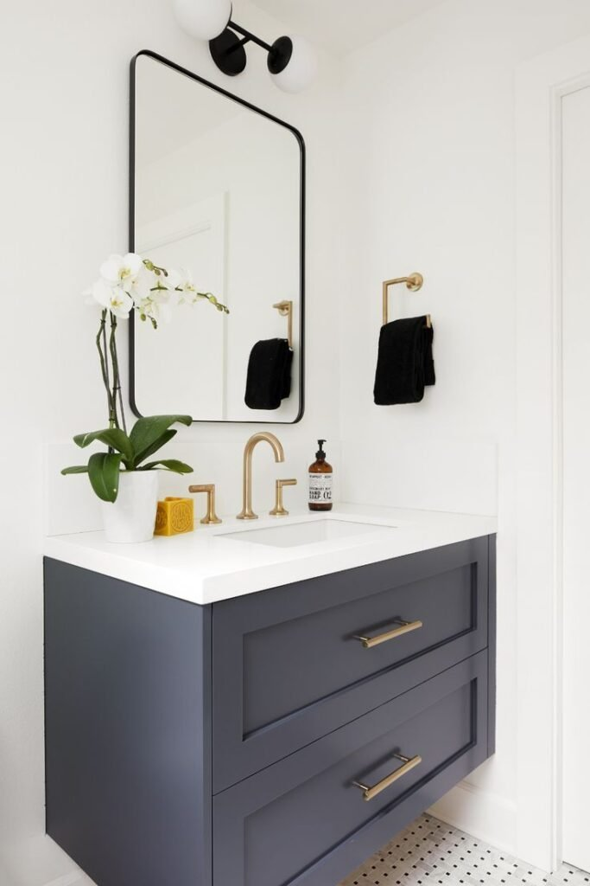
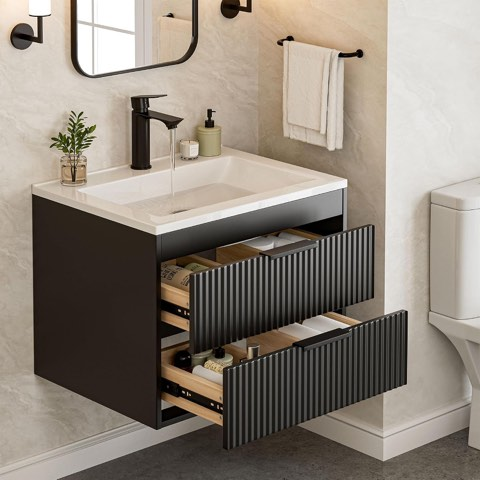
24 Inch Modern Wall Mounted Floating Vanity with Sink and Double Drawers, Black
Shop on Amazon14. Dark, Moody Color That Feels Rich
Dark walls in a small room sound risky. In practice, they tend to make a powder room feel more intentional, not smaller.
Charcoal gray, navy blue, deep emerald and soft black all read as upscale rather than cramped.
Pair a dark wall with warm metallics, soft lighting and clean-lined fixtures.
Because powder rooms only get quick visits, the darkness never has time to feel heavy.
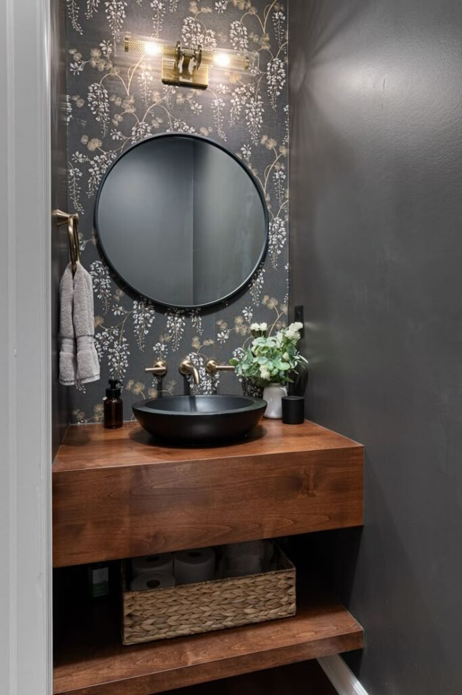
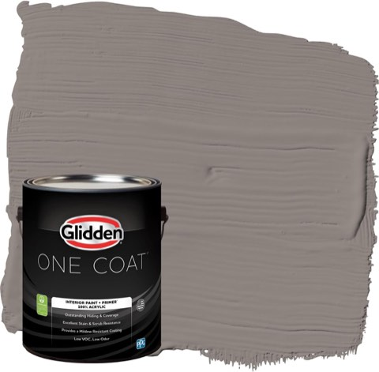
Glidden Interior Paint and Primer, Elephant Gray, One Coat, Eggshell, 1 Gallon
Shop on Amazon15. A Mirror Worth Noticing
A mirror does more than reflect a face, it reflects the whole room's style.
Swapping a basic rectangle for an oversized arched mirror alone can change the entire feel of a space.
Arched shapes, antique gold frames, thin black metal, or an organic asymmetrical silhouette all hold up well.
Skip the overly ornate frame unless the whole room already leans classic.
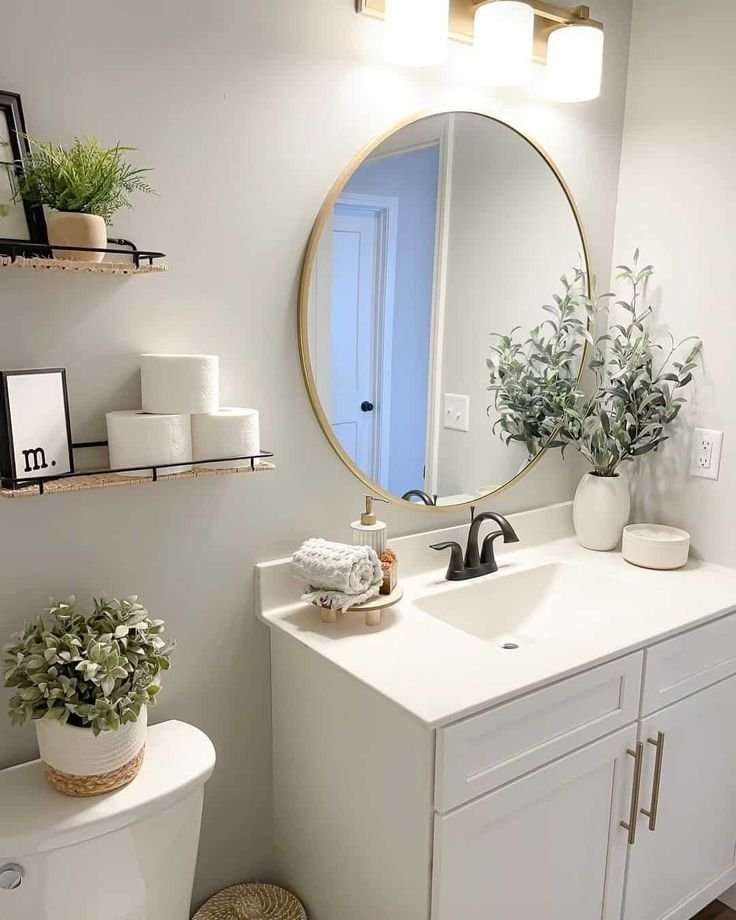
PERFNIQUE Irregular Asymmetrical Wall Mirror, 32 x 24 Inch, Gold
Shop on AmazonSweetcrispy Arched Gold Wall Mirror, 24 x 36 Inch
Shop on Amazon16. Dramatic Wallpaper That Does the Talking
Powder rooms don't take the daily wear a full bathroom does, which makes bold wallpaper a much lower-risk move here than almost anywhere else in the house.
Large-scale florals, subtle metallics, textured grasscloth and moody botanicals all read as intentional rather than busy.
Once the wallpaper is in, keep the vanity and accessories calm. Let the walls lead.
Haimin Peel and Stick Grasscloth Wallpaper, Textured Fabric Contact Paper
Shop on AmazonDark Vintage Large Peony Floral Wallpaper Wall Mural
Shop on Amazon17. One Hero Element, Chosen on Purpose
Every elegant powder room has a star.
It might be the wallpaper, the mirror, the vanity, the light fixture, or the sink.
Design around that one piece first.
Everything else gets chosen to support it, not compete with it.
One Unexpected Detail
Every genuinely stunning powder room has one surprise built in.
A bold art piece. A dramatic light fixture. An unusual mirror shape. A textured wall finish.
That one element is what makes people pause for a second on their way out.
The most elegant rooms rarely play it completely safe, they take one smart, considered risk.
iThird Battery Operated Wall Sconces, Set of 2, Rechargeable, 360 Degree Rotatable
Shop on AmazonArt3dwallpanels 3D Diamond Wall Panels, 33 Pack, Black, 12 x 12 Inch
Shop on AmazonFinal Thoughts
A powder room doesn't need square footage to be beautiful. It needs intention.
Pick a clear direction. Choose one hero element. Layer in a few thoughtful details around it.
Restraint, more than budget, is what separates an elegant powder room from a merely decorated one.
Start with one change from this list and build from there.
The rest of the room tends to fall in line once that first decision is made with real confidence.